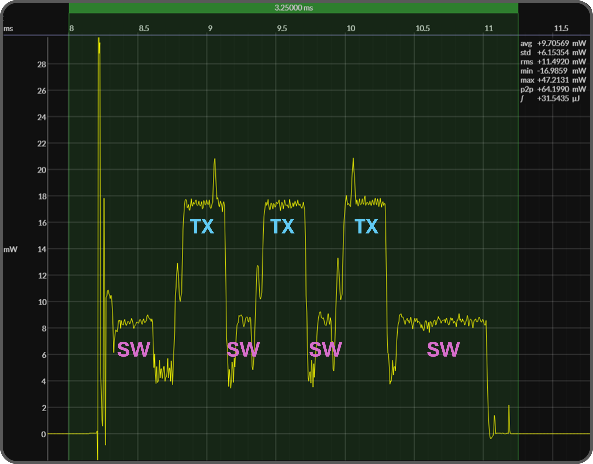

MCU datasheets power (W), not energy (J)
An MCU vendor claims their ultra-low-power device will consume 700 nA @ 3 V when in deep-sleep.
They also specify that their MCU will consume 50 μA / MHz when actively executing CoreMark®.
Fine … But not knowing how long the MCU executes, one cannot quantify overall energy efficiency.
Software adding the dimension of time
MCU datasheets define a set of power states; embedded SW governs the time spent in each state.
That time ultimately determines total energy.
Energy efficiency the primary metric
Power specifications alone do not capture efficiency.
Only by measuring energy can one quantify how effectively an embedded system performs its function.
That measurement requires running embedded application SW with a live, characteristic workload.
BlueJoule BLE advertising benchmark
The BlueJoule™ benchmark provides a real-world reference for this shift – from power to energy.
The benchmark defines a rudimentary Bluetooth Low-Energy workload – transmitting 19 bytes over three BLE advertising channels at 0 dB, once per second.
BlueJoule also exposes the limits of relying on datasheet power specs when estimating battery life.
Multiple MCUs varied voltage points
BlueJoule currently reports scores for BLE-capable MCUs from leading silicon vendors. A public GitHub repository houses all supporting artifacts.
By convention, BlueJoule performs raw energy measurements with the MCU powered at 3.0 V – aligned with the vendors' datasheets.
BlueJoule also characterizes each MCU at its optimal operating voltage (as low as 1.5 V), where the device maximizes its overall energy efficiency.
Vendor SDK stacks shared baseline
A BLE software stack included within each vendor's SDK provides the requisite workload for measuring MCU energy consumption.
With so much emphasis on finding the most energy-efficient MCU, the software stack typically remains constant – a fixture within the benchmark.
Legacy stacks hidden inefficiencies
Consider this capture of a BLE advertising event.

The capture shows three transmission bursts typical of a BLE advertising event.
The time to transmit the BlueJoule packet determines the width of these pulses; the height matches the TX power spec of the MCU's radio.
While these peaks dominate the capture's skyline, they account for less than half of the total energy consumed by this advertising event.
Executing the BLE software stack in fact dominates the area under the power curve.
SW overhead shifts burden to silicon
Vendor BLE stacks often weigh-in at over 200K bytes of code – replete with abstraction layers which incur significant run-time (hence energy) overhead.
While ripe for re-factoring, silicon vendor time-to-market pressure often dictates "throwing memory and MIPs" at the SW within next-generation MCUs.
EMScript reclaim energy with software
An alternative software approach can eliminate much of this overhead – reducing execution time and hence shrinking the area under the power curve.
The EMScript programming language employs a novel translator which generates tiny, specialized target firmware – often outperforming legacy C code.
Less time active more time asleep.